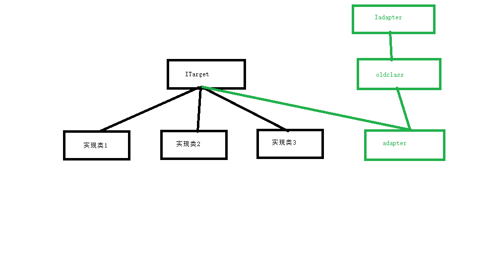
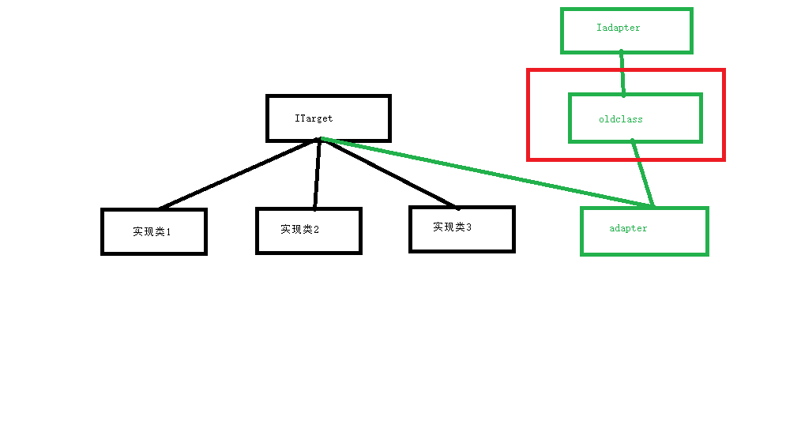
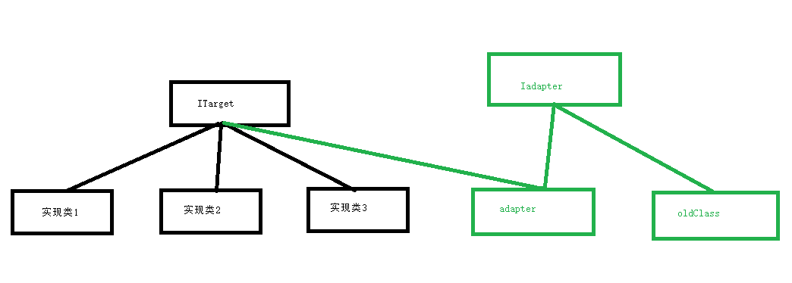
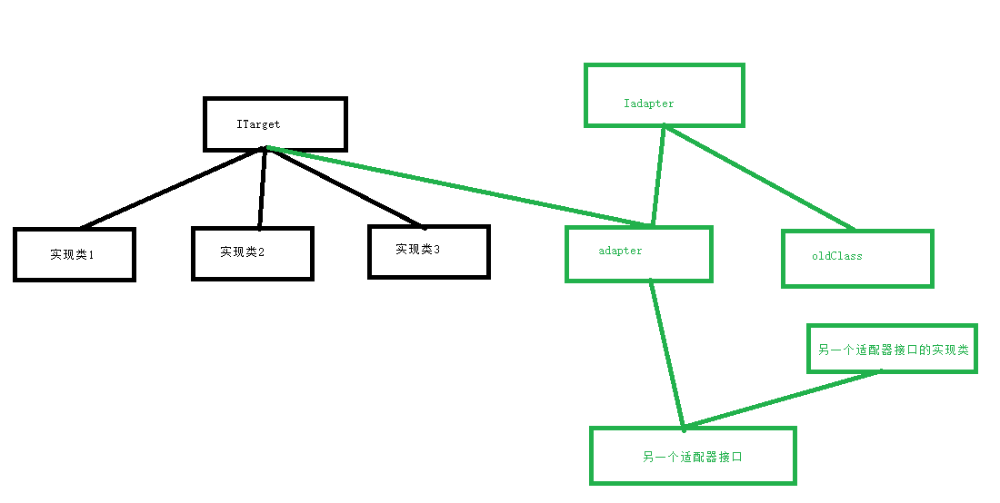

适配器模式，是一个看起来简单的模式，同时也是最复杂的模式。
查看适配器的作用，直接查看它的演化，也许更为容易理解。
适配器大概分为两类，一类为类适配器，另一类为对象适配器。
//新接口
public interface ITarget {
void Process();
}
//旧接口
public interface Iadapter
{
void doSomeThing();
void doOtherThing();
}
//旧接口的实现类
public class oldClass : Iadapter
{
public void doOtherThing()
{
throw new NotImplementedException();
}
public void doSomeThing()
{
throw new NotImplementedException();
}
}
//新的接口实现
public class Adapter : oldClass, ITarget
{
public void Process()
{
doSomeThing();
doOtherThing();
}
}解释:
| 类 | 作用 |
|---|---|
| ITarget | 一个新的需求接口 |
| Iadapter | 旧的接口 |
| oldClass | 旧的接口实现类 |
| Adapter | 新的的接口实现类 |
从上面可以看出，新的接口的需求里，需要调用旧的接口里面的实现方法。这是它的一个应用场景。
很容易想到一个问题，为什么不直接扩展旧的接口呢？其实更加真实的场景,请看下面这张图。

在这里，通过这种方式，我们可以说是适配了一个多态场景。
这种方式视为类适配器，存在的很大的局限性，请看下图红色部分。

在红色的部分中，圈出了oldclass，这意味着我们仅仅对oldclass进行了适配。如果Iadapter还有其他衍生的类，那么这将是一个庞大的结构问题,不建议使用。
对象适配器：
//新接口
public interface ITarget {
void Process();
}
//旧接口
public interface Iadapter
{
void doSomeThing();
void doOtherThing();
}
//旧接口的实现类
public class oldClass : Iadapter
{
public void doOtherThing()
{
throw new NotImplementedException();
}
public void doSomeThing()
{
throw new NotImplementedException();
}
}
//新的接口实现
public class Adapter : ITarget
{
public Iadapter Iadapter;
public Adapter(Iadapter Iadapter) {
this.Iadapter = Iadapter;
}
public void Process()
{
Iadapter.doSomeThing();
Iadapter.doOtherThing();
}
}请看下图:

这样我们就适配了Iadapter 这个接口下的所有实现类，比类适配器的另一个好处是，在不能多继承的高级语言(钻石继承)中，可以如下实现，也更符合实际的复杂一点点的情形。

对于复杂一点的对象适配器依然实用，但是类适配器却很难做到。
调用：
static void Main(string[] args)
{
Iadapter adapter = new oldClass();
ITarget target = new Adapter(adapter);
target.Process();
}画图，后续补上。
适配器模式的场景是为了适配新的需求，新的需求可以复用旧的接口或者类。
作用：保留现有类所提供的服务，向新需求提供接口，以满足新需求的期望